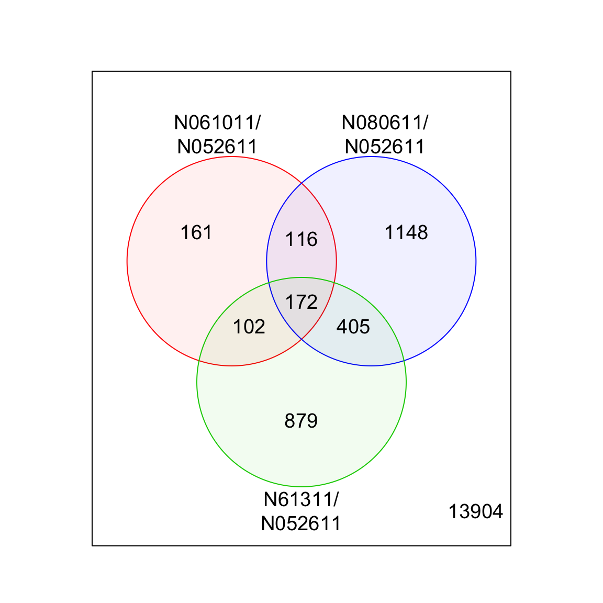
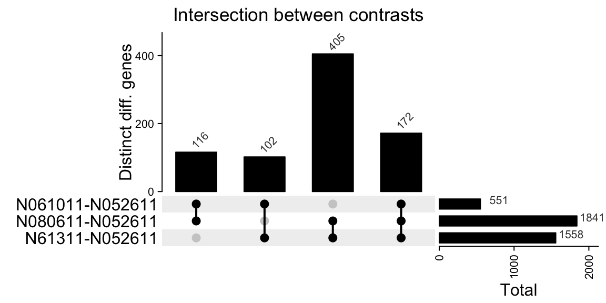

library(airway)
library(ComplexHeatmap)
library(edgeR)
library(limma)Today I learned how to use UpSet plots to visualize the overlap between sets of differentially expressed genes.
I often analyze RNA-seq experiments with multiple factors, e.g. different treatments, conditions, cell lines, genotypes, time points, etc. The scientific questions typically involve not just one, but multiple comparisons between experimental groups. For example:
- How do wildtype cells respond to drug treatment?
- How do mutant cells respond?
- What is the effect of drug treatment in growth medium A? Or B? Or C?
- Is there a significant difference between treatment effects in wildtype and mutant cells?
- etc
To answer these questions, I typically fit a single linear model and then extract the comparisons of interest by specifying each of them as as contrast. (Check out the vignette of the excellent designmatrices Bioconductor package for details on creating design matrices and extracting contrasts.)
After applying a suitable p-value / FDR threshold, each comparison / contrast yields a list of differentially expressed genes1. When the lists are long, it is difficult to assess the degree of overlap, e.g. the number of genes that were detected in multiple contrasts.
If the number of comparisons is small (say < 5), then a Venn diagram is an excellent way of displaying how these sets of genes overlap. But when the number of sets increases, so does the number of intersections - and Venn diagrams soon become hard to draw (and interpret).
Upset plots can be used to clearly visualize larger numbers of sets. Here, I am using the airway Bioconductor dataset, an RNA-Seq experiment on four human airway smooth muscle cell lines treated with dexamethasone, to illustrate how to
- Fit a linear model using limma/voom
- Extract multiple contrasts
- Visualize the numbers and intersections of differentially expressed gene sets using Venn diagrams and UpSet plots.
Normalization, filtering & linear modeling
My typical analysis workflow uses functions from the edgeR and limma R packages.
The airway experiment is multifactorial, and it includes:
- Cells from different donors (
cellcovariate) - Treatment with dexamethasone - or not (
dexcovariate) - Different read lengths (
avgLengthcovariate)
data(airway, package = "airway")
with(colData(airway), table(cell, dex)) dex
cell trt untrt
N052611 1 1
N061011 1 1
N080611 1 1
N61311 1 1Here, I will focus only on the cell and dex variables, formulating a linear model that includes these two additive predictors: ~ 0 + cell + dex
Note
There are alternative ways to parameterize a linear model. For example, to obtain the pairwise comparisons between the first and the other three cell, lines (see below) the model ~ cell + dex would have returned the same results without the need for contrasts. But for complex multivariate experiments, I personally find it easier to exclude the intercept term and to manually define contrasts of interest.
First, the data is normalized with the TMM method. Next, we focus only on genes exceeding a minimal expression threshold by filtering the dataset with the filterByExpr function. Then we are ready to fit the linear model - performing both the voom transformation and the model fitting with the voomLmFit function.
airway <- calcNormFactors(airway)
design <- model.matrix(~ 0 + cell + dex, data = airway$samples)
colnames(design) <- sub("cell", "", colnames(design))
keep <- filterByExpr(airway, design = design)
fit <- voomLmFit(airway[keep, row.names(design)], design = design)For simplicity, we extract three contrasts, comparing gene expression between cell line N052611 and each of the other three lines (adjusted for dexamethasone treatment). (These might not be the most biologically interesting comparisons, but this post is focused on visualization - not biology.)
# contrasts: differences between the first and all other cell lines
contrasts <- makeContrasts(
"N061011-N052611",
"N080611-N052611",
"N61311-N052611",
levels = design
)
fit2 <- contrasts.fit(fit, contrasts)
results <- limma::decideTests(fit2)
summary(results) N061011-N052611 N080611-N052611 N61311-N052611
Down 279 1107 913
NotSig 16336 15046 15329
Up 272 734 645Venn diagram
Each of the pairwise comparisons yields hundreds of differentially expressed genes (at the default FDR < 5% threshold for each contrast imposed by limma’s decideTests function.) But are these genes similar across cell lines?
For three comparisons, limma’s built-in vennDiagram function is very useful:
limma::vennDiagram(
results,
counts.col = "black",
circle.col = c("red", "blue", "green3"),
names = sub("-", "/\n", colnames(results)),
mar = rep(0,4),
cex = c(1.2,1,0.7)
)
The diagram shows that only a minority of genes is differentially expressed between all three cell lines and our reference (cell line N052611). Most of the genes are only observed in the comparison between lines N080611 and N052611.
Tip
This example doesn’t distinguish between up- and down-regulated genes, e.g. a gene that is up-regulated in one contrast but down-regulated in another would be found in the intersection. To display separate counts for up- and downregulated genes, add the include=c("up", "down") argument to the vennDiagram call.
If the number of comparisons increases, Venn diagrams are less useful (e.g. the famous banagram with six sets).
Upset plots
There are multiple R packages that can generate UpSet plots, including e.g. UpSetR. I ran into difficulties customizing both the names of the sets and select specific intersections for plotting with UpSetR. Instead, I am using the UpSet function included in the ComplexHeatmap R package here.
In preparation for plotting, multiple helper functions are available, including
make_comb_mat: calculcate the overlap between different sets, according to the user-specifiedmode: one ofdistinct,intersectorunion.comb_degree: return the degree of each combination, e.g. how many sets were included.set_size: return the size of each input setcomb_size: return the size of each of the intersected sets (e.g. the same sets shown in the Venn diagram above, because themodewas set todistinct).
For example, let’s first restrict our input to all genes called significant in at least one of the comparisons:
# remove genes not signif. in any contrast
results <- results[rowSums(abs(results)) > 0, ]Next, we determine the number of genes in each intersection. (Because make_comb_mat includes single sets as well, we exclude them by filtering out all results for intersections of degree one.)
# calculate the intersection between the differentially expressed gene sets
m <- make_comb_mat(abs(results), mode = "distinct")
# exclude self-intersects (total # of diff. genes will be displayed separately)
m <- m[comb_degree(m) > 1]Let’s check the size of the input sets (e.g. all up- and down-regulated genes in each comparison):
(ss <- set_size(m))N061011-N052611 N080611-N052611 N61311-N052611
551 1841 1558 and their intersections:
(cs <- comb_size(m))111 110 101 011
172 116 102 405 (Together, these numbers reproduce what was shown in the Venn diagram above.) Now we are ready to generate an UpSet plot!
Because the UpSet function uses the ComplexHeatmap::Heatmap function under the hood, the resulting plot can be annotated / decorated with the same set of functions. Here, we plot the intersections in the main plot, and then add the size of the individual sets on the right-hand margin.
ht <- UpSet(m,
set_order = colnames(m),
comb_order = order(comb_degree(m)),
top_annotation = HeatmapAnnotation(
"Distinct diff. genes" = anno_barplot(
cs,
ylim = c(0, max(cs)*1.1),
border = FALSE,
gp = gpar(fill = "black"),
height = unit(4, "cm")
),
annotation_name_side = "left",
annotation_name_rot = 90),
right_annotation = HeatmapAnnotation(
which = "row",
"Total" = anno_barplot(
ss,
ylim = c(0, max(ss)*1.1),
border = FALSE,
gp = gpar(fill = "black"),
width = unit(4, "cm")
)
),
column_title = "Intersection between contrasts"
)
ht = draw(ht)
od = column_order(ht)
rod = row_order(ht)
decorate_annotation("Distinct diff. genes", {
grid.text(cs[od],
x = seq_along(cs),
y = unit(cs[od], "native") + unit(2, "pt"),
default.units = "native", just = c("left", "bottom"),
gp = gpar(fontsize = 8, col = "#404040"), rot = 45)
})
decorate_annotation("Total", {
grid.text(ss[rod],
x = unit(ss[rod], "native") + unit(20, "pt"),
y = rev(seq_along(ss)),
default.units = "native", just = c("right", "bottom"),
gp = gpar(fontsize = 8, col = "#404040"))
})
Each column of the main plot shows the number of genes that are unique to the intersection of the two (or three) indicated comparisons, matching those in the previous Venn diagram.
For a small number of sets, a Venn diagram might be the preferred e.g. because readers might be familiar this visualization. But an UpSet plot is well suited for the analysis more than three sets. (See more examples here ).
Reproducibility
─ Session info ───────────────────────────────────────────────────────────────
setting value
version R version 4.2.2 (2022-10-31)
os macOS Big Sur ... 10.16
system x86_64, darwin17.0
ui X11
language (EN)
collate en_US.UTF-8
ctype en_US.UTF-8
tz America/Los_Angeles
date 2023-01-16
pandoc 2.19.2 @ /Applications/RStudio.app/Contents/MacOS/quarto/bin/tools/ (via rmarkdown)
─ Packages ───────────────────────────────────────────────────────────────────
package * version date (UTC) lib source
airway * 1.18.0 2022-11-03 [1] Bioconductor
askpass 1.1 2019-01-13 [1] CRAN (R 4.2.0)
Biobase * 2.58.0 2022-11-01 [1] Bioconductor
BiocGenerics * 0.44.0 2022-11-01 [1] Bioconductor
bitops 1.0-7 2021-04-24 [1] CRAN (R 4.2.0)
circlize 0.4.15 2022-05-10 [1] CRAN (R 4.2.0)
cli 3.5.0 2022-12-20 [1] CRAN (R 4.2.0)
clue 0.3-63 2022-11-19 [1] CRAN (R 4.2.0)
cluster 2.1.4 2022-08-22 [2] CRAN (R 4.2.2)
codetools 0.2-18 2020-11-04 [2] CRAN (R 4.2.2)
colorspace 2.0-3 2022-02-21 [1] CRAN (R 4.2.0)
ComplexHeatmap * 2.14.0 2022-11-01 [1] Bioconductor
crayon 1.5.2 2022-09-29 [1] CRAN (R 4.2.0)
credentials 1.3.2 2021-11-29 [1] CRAN (R 4.2.0)
DelayedArray 0.24.0 2022-11-01 [1] Bioconductor
digest 0.6.31 2022-12-11 [1] CRAN (R 4.2.0)
doParallel 1.0.17 2022-02-07 [1] CRAN (R 4.2.0)
edgeR * 3.40.1 2022-12-14 [1] Bioconductor
evaluate 0.19 2022-12-13 [1] CRAN (R 4.2.0)
fastmap 1.1.0 2021-01-25 [1] CRAN (R 4.2.0)
foreach 1.5.2 2022-02-02 [1] CRAN (R 4.2.0)
GenomeInfoDb * 1.34.4 2022-12-01 [1] Bioconductor
GenomeInfoDbData 1.2.9 2022-12-12 [1] Bioconductor
GenomicRanges * 1.50.2 2022-12-16 [1] Bioconductor
GetoptLong 1.0.5 2020-12-15 [1] CRAN (R 4.2.0)
GlobalOptions 0.1.2 2020-06-10 [1] CRAN (R 4.2.0)
glue 1.6.2 2022-02-24 [1] CRAN (R 4.2.0)
htmltools 0.5.4 2022-12-07 [1] CRAN (R 4.2.0)
htmlwidgets 1.5.4 2021-09-08 [1] CRAN (R 4.2.2)
IRanges * 2.32.0 2022-11-01 [1] Bioconductor
iterators 1.0.14 2022-02-05 [1] CRAN (R 4.2.0)
jsonlite 1.8.4 2022-12-06 [1] CRAN (R 4.2.0)
knitr 1.41 2022-11-18 [1] CRAN (R 4.2.0)
lattice 0.20-45 2021-09-22 [2] CRAN (R 4.2.2)
lifecycle 1.0.3 2022-10-07 [1] CRAN (R 4.2.0)
limma * 3.54.0 2022-11-01 [1] Bioconductor
locfit 1.5-9.6 2022-07-11 [1] CRAN (R 4.2.0)
magrittr 2.0.3 2022-03-30 [1] CRAN (R 4.2.0)
Matrix 1.5-3 2022-11-11 [1] CRAN (R 4.2.0)
MatrixGenerics * 1.10.0 2022-11-01 [1] Bioconductor
matrixStats * 0.63.0 2022-11-18 [1] CRAN (R 4.2.0)
openssl 2.0.5 2022-12-06 [1] CRAN (R 4.2.0)
png 0.1-8 2022-11-29 [1] CRAN (R 4.2.0)
RColorBrewer 1.1-3 2022-04-03 [1] CRAN (R 4.2.0)
Rcpp 1.0.9 2022-07-08 [1] CRAN (R 4.2.0)
RCurl 1.98-1.9 2022-10-03 [1] CRAN (R 4.2.0)
rjson 0.2.21 2022-01-09 [1] CRAN (R 4.2.0)
rlang 1.0.6 2022-09-24 [1] CRAN (R 4.2.0)
rmarkdown 2.19 2022-12-15 [1] CRAN (R 4.2.0)
rstudioapi 0.14 2022-08-22 [1] CRAN (R 4.2.0)
S4Vectors * 0.36.1 2022-12-05 [1] Bioconductor
sessioninfo 1.2.2 2021-12-06 [1] CRAN (R 4.2.0)
shape 1.4.6 2021-05-19 [1] CRAN (R 4.2.0)
stringi 1.7.8 2022-07-11 [1] CRAN (R 4.2.0)
stringr 1.5.0 2022-12-02 [1] CRAN (R 4.2.0)
SummarizedExperiment * 1.28.0 2022-11-01 [1] Bioconductor
sys 3.4.1 2022-10-18 [1] CRAN (R 4.2.0)
vctrs 0.5.1 2022-11-16 [1] CRAN (R 4.2.0)
xfun 0.35 2022-11-16 [1] CRAN (R 4.2.0)
XVector 0.38.0 2022-11-01 [1] Bioconductor
yaml 2.3.6 2022-10-18 [1] CRAN (R 4.2.0)
zlibbioc 1.44.0 2022-11-01 [1] Bioconductor
[1] /Users/sandmann/Library/R/x86_64/4.2/library
[2] /Library/Frameworks/R.framework/Versions/4.2/Resources/library
──────────────────────────────────────────────────────────────────────────────
This work is licensed under a Creative Commons Attribution 4.0 International License.
Footnotes
Both Venn diagrams and upset plots operate on sets, e.g. they require that a hard threshold has been applied to the results of a differential expression analysis. That’s problematic, because p-values themselves display high variability and dichotomizing quantitative information looses information.↩︎